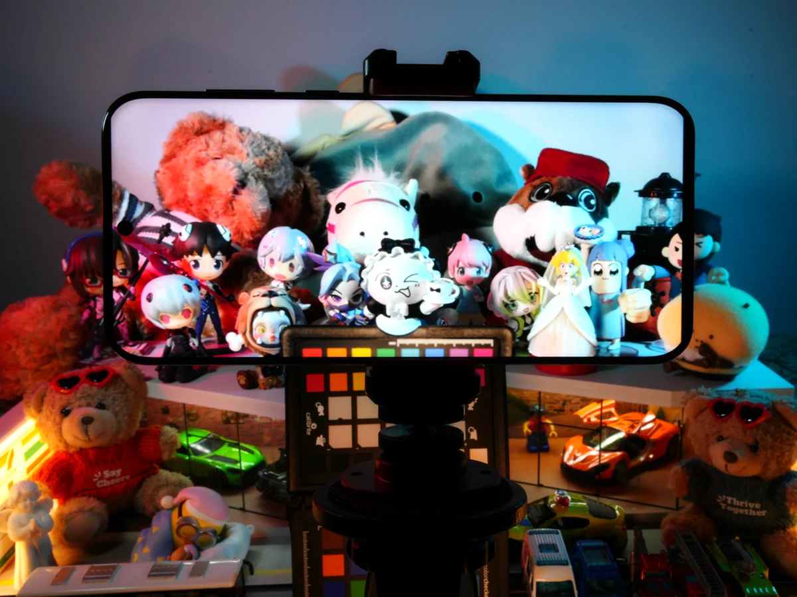
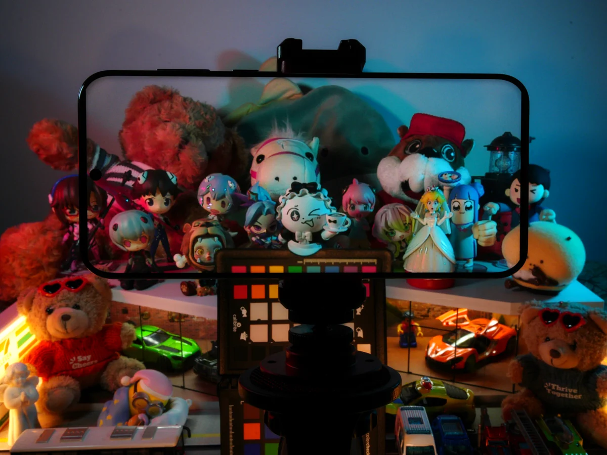
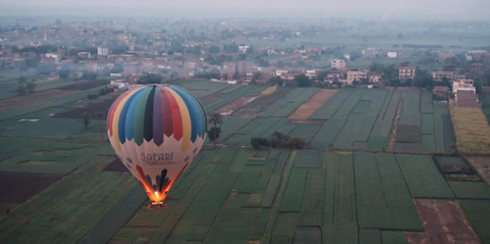
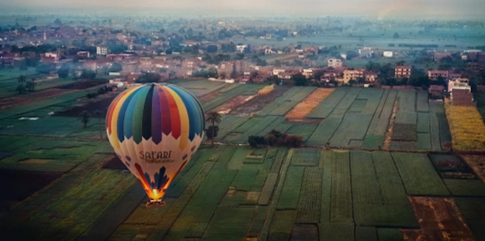
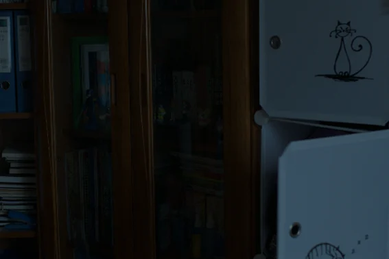
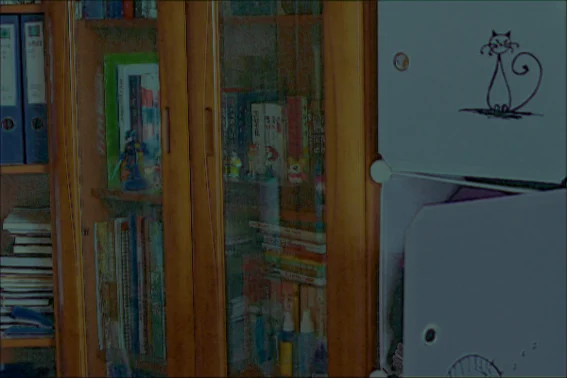
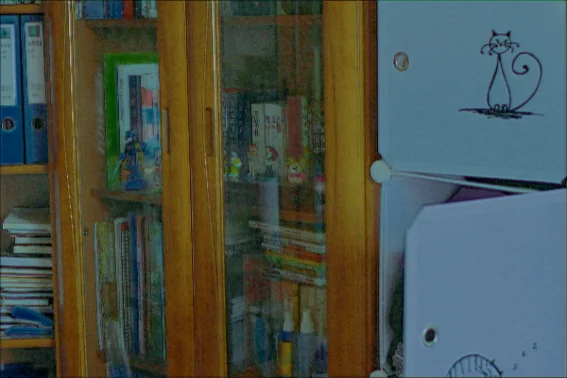
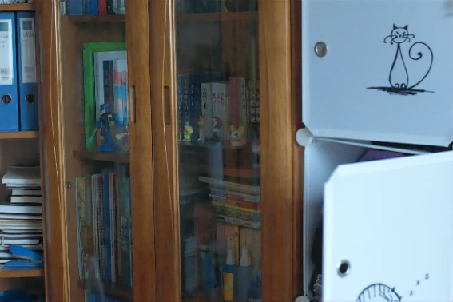

After BeforeColor Pass-Through via Camera-Display Coupling
Make a smartphone transparent like Apple Vision Pro.
2-nd year PhD student at MMLab, CUHK, advised by Prof. Tianfan Xue.
Before starting my PhD, I earned an MSc in Applied Optics from Zhejiang University, where I worked with Dr. Shiqi Chen, and a BSc with distinction in Opto-Electronics from Tianjin University.
Email lyricccco44 at gmail.com
I am currently working on Agentic Harnesses with Generative Models, focusing on test-time scaling for agentic systems and long-horizon unified generation. My previous work includes Computational Photography, End-to-End Optimization of Imaging Systems, and Opto-Physical Simulations.
* Equal contribution · † Corresponding author


After BeforeMake a smartphone transparent like Apple Vision Pro.


After BeforeDistill diffusion models into bilateral space for fast 4K-image retouching in 0.068 seconds.
State-of-the-art dual-domain denoising that generalizes directly to any commercial camera.

Stage 1
Stage 2
Stage 3
Stage 4Progressively restore low-light images through a diffusion-like process.

Simulate the complete lunar imaging chain, from surface radiance to camera output.

Model optical imaging in the Moon’s permanently shadowed regions.


BSc · Opto-Electronics Engineering
2017 — 2021
GPA 3.82 / 4.0 · National Scholarship